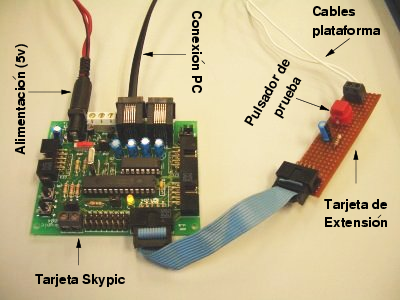

Next: 3 Software de Gestión Up: 4 Arquitectura del Sistema Previous: 1 Plataforma de contactos


Next: 3 Software de
Gestión Up: 4
Arquitectura del Sistema Previous: 1
Plataforma de contactos
La electrónica para realizar la medición la hemos bautizado como Chronopic. Utiliza un microcontrolador PIC16F876, de 8 bits, que mide el tiempo transcurrido entre los dos eventos posibles: paso de ON a OFF y de OFF a ON. Cada vez que llega un evento, se envía una trama por el puerto serie indicando el estado de la plataforma y el tiempo transcurrido desde el último evento.
La ventaja de tener un sistema de medición independiente es que se garantiza la fiabilidad de las mediciones aunque se utilicen ordenadores o dispositivos diferentes. La lectura de estas mediciones en el PC es tan sencilla como abrir el puerto serie y leer las tramas que lleguen.
|
 |
Figure: Prototipo de Chronopic a partir de la Skypic y una tarjeta de extensión
Para el primer prototipo de Chronopic se ha utilizado la tarjeta Skypic[11], que es hardware libre, a la que se ha añadido una tarjeta de extensión, que contiene un circuito antirrebotes, un pulsador de pruebas y un par de bornas para conectar los dos cables provenientes de la plataforma de contactos.
Este prototipo ha permitido desarrollar y depurar el software para el PIC, que realiza la medición.
La versión final de Chronopic se ha diseñado partiendo de los planos de la Skypic, a la que se han añadido la electrónica de la tarjeta de extensión. Todavía no se ha creado el PCB (Printed Circuit Board) final. Chronopic ha sido derivada a partir de un diseño libre y por tanto es libre. La definición de hardware libre que usamos es la discutida en [12]: los ``ficheros fuente'' con los planos del hardware están disponibles y se conceden permisos para su uso, estudio, modificación, fabricación, distribución y redistribución de las mejoras. Esto, además, garantiza que cualquier pueda validar su funcionamiento.
La versión industrial del PCB será diseñada con el programa Kicad[13], una herramienta profesional de diseño electrónico, con licencia GPL.


Next: 3 Software de
Gestión Up: 4
Arquitectura del Sistema Previous: 1
Plataforma de contactos